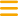

<div class="ion-page" id="main-content">
  <!-- BARRA DE NAVAGEACION -->
  <app-navbar></app-navbar>

  <ion-header>
    <ion-toolbar>
      <div [ngClass]="
             openOrCloseUserSettings ? 
              'content_header_true'
             :
              'content_header'"
            >
<!-- OPEN OR CLOSE MENU -->
        <ion-menu-button class="header_items" slot="start">
          
        </ion-menu-button>
 <!--   IMAGEN ENMEDIO DIRECT -->
        
<!--  MENU CONFIGURACION USUARIO -->
        <div class="header_items items_settings">
          
          
          <div (click)="activeMenuUser()">
              
          </div>
        </div>
      </div>
    </ion-toolbar>
  </ion-header>

  <ion-tabs>
    <ion-tab-bar slot="bottom" >
      <ion-tab-button class="tab-link menu-but" tab="list">
        <div class="footer_items">
          
          <p>Lista</p>
        </div>
      </ion-tab-button>
      <ion-tab-button class="tab-link menu-but" tab="map">
        <div class="footer_items">
          
          <p>Mapa</p>
        </div>
      </ion-tab-button>
      <ion-tab-button class="tab-link menu-but" tab="myRoute">
        <div class="footer_items">
          
          <p>Mi Ruta</p>
        </div>
      </ion-tab-button>
    </ion-tab-bar>
  </ion-tabs>
</div>